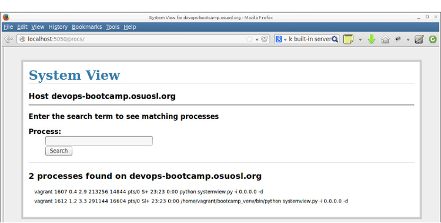

Lesson 5: Web Applications
What is a web app?
Note
- talk briefly about responsibilities of each component
- talk briefly about http
- mention Virtual Environments (red box on diagram)
What is this Virtual Environment thing?
Note
Discuss system packages vs local, mention rvm
- Separates application packages from system packages
- Choose versions that differ from the system versions
- Maintain a list of required packages for easy install
- Install modules as a user
- Pip and Gem
Frameworks
Ready-made building blocks take care of the tedious details:
- Speaking HTTP
- Connecting code to URLS
- Talking to the database
- Built-in development servers
Popular frameworks:
Django, CakePHP, Ruby on Rails, Flask
Note
Talk about major differences between frameworks, especially Django and Flask
The SystemView app
Display a filtered list of processes on the system

Note
- explain basic idea of the app
- reference code from lesson 4
Setting Up
Update your vagrant file and vagrant up:
git pull
vagrant up
vagrant ssh
Note
Changes to the vagrant file: forward port 5050 to 5000 on the vm
Setting Up
Install packages
sudo apt-get install python-virtualenv*
sudo apt-get install git
Create a virtualenv
virtualenv systemview_venv
And activate it
source systemview_venv/bin/activate
Note
- students probably already have git?
- discuss what virtualenv actually does, what is in it
- env variables, etc
- they can put the virtualenv anywhere, discuss locations
- discuss, but don't use virtualenv tools (mkvirtualenv, use, etc)
- explain what source does
Get the Code
git clone git@github.com:WWUDevOps/systemview.git
Note
- break here for github account setup, key location (where are they checking
code out from? Where is their key located?), etc
- https://github.com/WWUDevOps/systemview.git for anyone who can't get
their account/key working
Run the Code
cd systemview
python systemview.py
Fail
Oops!
Traceback (most recent call last):
File "systemview.py", line 2, in <module>
from flask import Flask, request, session, g, redirect, url_for, \
ImportError: No module named flask
Note
talk about missing modules, we need to install them, this is
what the venv is for
Pip
A package manager for Python packages
- Connects to PyPi, a vast repository of Python modules
- Resolves dependencies, installs prerequisites
- Can install packages from a list in a file
Install What's Missing
Make sure you are in your virtualenv, then:
pip install flask
pip install argparse
Note
- How do you know if you are in the virtualenv?
- can put requirements in requirements.txt for easy installation
Run and Test!
python systemview.py -i 0.0.0.0 -d
Now go to http://localhost:5050
Note
- talk about flags
- go to terminal after this slide and talk about the code:
- main module, templates, css, etc
- Point out areas where bugs could be fixed or features added
Branch and Modify
Create a Github issue for your changes
https://github.com/DevOpsBootcamp/systemview/issues
Create a branch for your changes
When you have made changes and everything works, push it up
Note
- talk about branching vs forking, get everyone working on a new feature or
bug
- use IRC handles for branch names to make sure you are unique and
identifiable
Homework
Add a feature or fix a bug, push your changes up.
Github URL:
https://github.com/WWUDevOps/systemview
Github issue tracker:
https://github.com/WWUDevOps/systemview/issues
{kind=link}